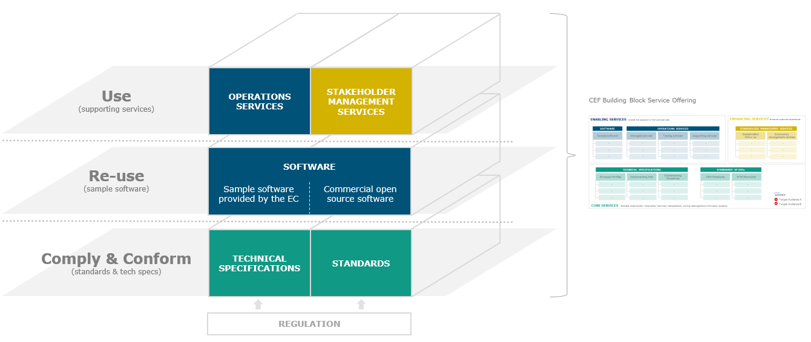

Let’s start with the Connecting Europe Facility CEF and its Building Blocks; what are they? The European Union realise that the internet and digital technologies are transforming our world. They also see is that the digital landscape is becoming more diverse, creating challenges for cross-border interoperability and intercommunication. Europe is about working together but, Europeans still face barriers when using (cross-border) online tools and services. The implications are considerable. EU citizens can miss out on goods and services, and businesses in the EU miss out on market potential. At the same time, also the different governments in the EU cannot fully benefit from digital technologies. Therefore, the EU has described the Digital Single Market (DSM) through which it aims to create a suitable environment for digital networks and services to flourish. The DSM is achieved by setting the right regulatory conditions and providing cross-border digital infrastructures and services. So, to support the DSM, the Connecting Europe Facility (CEF) programme is funding a set of generic and reusable Digital Service Infrastructures (DSI), known as Building Blocks. These Building Blocks offer reusable modular capabilities to enable digital public services across borders and sectors. There are currently nine Building Blocks: Big Data Test Infrastructure, the European Blockchain Services Infrastructure, Context Broker, eDelivery, eID, eInvoicing, eSignature eTranslation and eArchiving. The main component of the Building Block is a Core Service Platform, provided and maintained by the European Commission. The Core Service Platform can include technical specifications, sample software and support services depending on the specific Building Block. The CEF Building Blocks provide basic capabilities that can be used to facilitate cross-border public service. The foundation of the CEF Building Blocks is interoperability agreements between the member states of the European Union. The objective of the Building Blocks is to facilitate interoperability between IT systems so that citizens, businesses and administrations can benefit from seamless digital public services wherever they may be in Europe.
Figure 1. The building block layers.
|  |
For each Building Block, the European Commission provides a Core Service Platform that consists of three layers:
At the core of each building block is a layer of standards and technical specifications;
for certain Building Blocks, a layer of compliant sample software exists to facilitate the implementation of the technical specifications and standards;
A layer of services (e.g. conformance testing, help desks, onboarding services, etc.) enables the adoption of the technical specifications and standards meant for use (which varies depending on the Building Block).
All this means that the Building Blocks can be combined and used in projects in any domain or sector at the European, national or local level.
Can it be as simple as just described with the Building Blocks? No, during 2021, CEF is ending and will be transitioned to the Digital Europe Program (DEP), which will be funded for seven years. This brings challenges to all the Building Blocks. At the writing of this paper, the EU member states have still not finalised the details of the DEP programme. The programme itself will be housed in the eHealth part of the digital work within the EU nothing more is known.